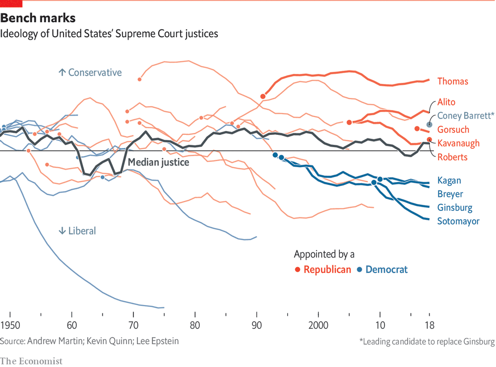
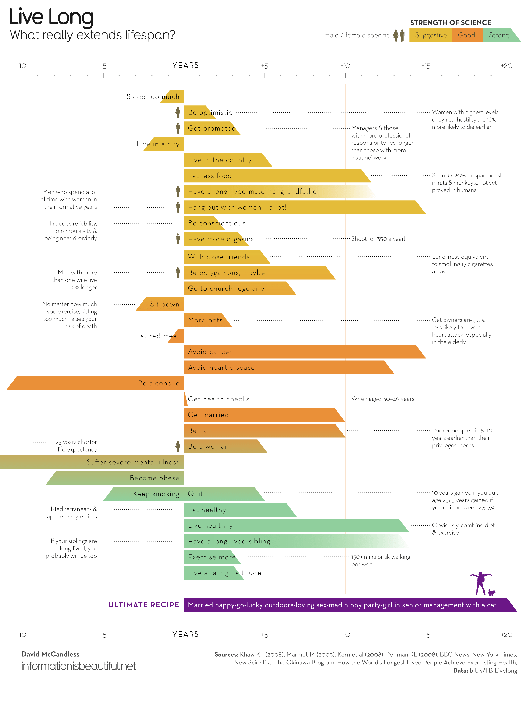
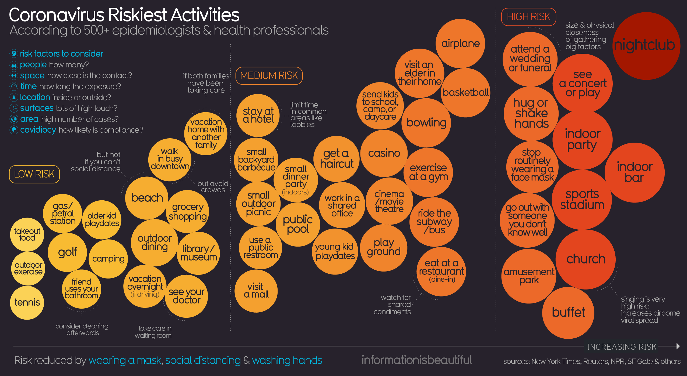

Part One
Vis #1
Critique
- This visualization is for an audience who wants to know more about where the Supreme Court justices stand on the ideology spectrum, especially now since the appointment of the new justice will affect all Americans in terms of future rulings.
- The visualization is based on two sources:
- The Martin-Quinn score, established by two political scientists who have measured the ideological balance of the court, and its individual justices, going back to 1937.
- Coney Barrett’s score is estimated by using a separate ideological measure for Appeals and Circuit court judges known as the Judicial Common Space (JCS) score.
- The data got encoded into trend lines of each justice in terms of being conservative or liberal, with a median line in the middle indicating the trend of the overall ideology of the Supreme Court.
- The audiences are expected to compare trend lines and see how different (appointment) of justices has influenced the position of the Supreme Court as a whole overtime. Moreover, with the new vacancy opened by the passing of Justice RBG, the audience is shown the effect of the new appointment if it were to be done by President Trump (assuming the current top runner Amy Coney Barrett receives the nomination).
- 5 Principles Evaluation:
- Truthful: The sources of this visualization are listed as is. Since the Martin-Quinn score and the JCS are both trusted measures in this field, we should assume that the visualization is truthful.
- Functional: There is little to no chart junk in this visualization since the trend lines of past justices, who are not the main focus of this graph, are in lighter colors with no labels.
- Beautiful: This graph is pretty aesthetically pleasing, at least to our group members. The simple red and blue color pallet over black lines and a white background leave the viewer with a sense of clarity on the data.
- Insightful: It does provide a lot of information such as the overview of the current Supreme Court justices, the history of the Supreme Court’s ideology, and the impact the new nominee by Trump would have.
- Enlightening: This graph seems enlightening as it not only provides the immediate information the creator wants the audience to receive, but also surprising ones such as how RBG was appointed as a moderate justice by the Democrats but became more liberal in practice over her tenure on the court.
Vis #2
Critique
this is my test critique
Vis #3
Critique
this is my test critique